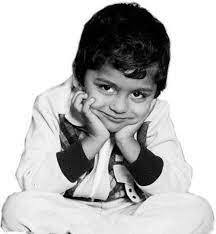
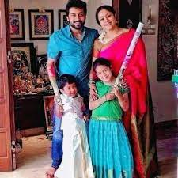
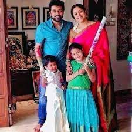
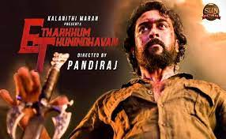

Suriya was born as Saravanan on 23 July 1975 in Madras (now Chennai) Tamil Nadu.Suriya is the elder son of actor Sivakumar and his younger brother Karthi is also an actor.
Suriya was born as Saravanan on 23 July 1975 in Madras (now Chennai), Tamil Nadu, to actor Sivakumar and his wife Lakshmi. He attended Padma Seshadri Bala Bhavan School and St. Bede's Anglo Indian Higher Secondary School in Chennai, and obtained his under graduate degree B.Com from Loyola College, Chennai. Suriya has two younger siblings, a brother Karthi and a sister Brindha. Suriya with his wife Jyothika at the launch of her film Kaatrin Mozhi Suriya is married to Jyothika. The couple, after dating for several years, got married on 11 September 2006. They have two children.
 

Prior to his career in films, Suriya worked at a garment exports factory for eight months. To avoid nepotism, he did not reveal himself to his boss as Sivakumar's son, but his boss ultimately learnt the truth himself. He was initially offered the lead role by Vasanth in his film Aasai (1995), but he rejected the offer citing a lack of interest in an acting career. He later debuted in Vasanth's own 1997 film Nerrukku Ner, produced by Mani Ratnam when he was 22 years of age. The stage name "Suriya" was bestowed to him by Ratnam to avoid a clash of names with established actor Saravanan. The name "Suriya" was frequently used for characters in Ratnam's films. Vijay, who co-starred with him in the film, would also go on to become a leading contemporary actor in Kollywood.
This was followed by a series of roles in commercially unsuccessful films in the late 1990s. In 1998, he starred in the romantic film Kaadhale Nimmadhi. In July the same year, he had another release Sandhippoma. Subsequently, he acted with Vijayakanth in the film Periyanna (1999), directed by S. A. Chandrasekhar. He then appeared twice with Jyothika in Poovellam Kettuppar (1999) and Uyirile Kalanthathu (2000). In 2001, he starred in Siddique's comedy film Friends, also co-starring Vijay, which became a commercial success.

is next release was another collaboration with Gautham Vasudev Menon after the success of Kaakha Kaakha. Suriya began work on Menon's biopic Vaaranam Aayiram in November 2007. Playing dual roles for the third time in his career, Suriya appeared as father and son, with both characters demanding scenes shot throughout their lives ranging from scenes as a 16-year-old to scenes as a 65-year-old. During the production of the film, Suriya described the project as "unique" and "straight from the heart", describing the physical hardships he endured during the making
Next film Anjaan directed by N. Lingusamy was released on 15 August 2014 to mixed reviews.[70] He also co-sang "Ek Do Theen Char" with Andrea Jeremiah for the film. On 15 May 2015, Suriya released 36 Vayadhinile starring his wife Jyothika, the first production from his company 2D Entertainment. His next release was Venkat Prabhu's film Massu Engira Masilamani (Masss) which released to unfavourable reviews, but critics were all in praise for Suriya's performance. In the same year Suriya produced Pasanga 2 (2015), directed by Pandiraj. Suriya also appears in an extended cameo role in the film as Tamizh Nadan.

Suriya's next film Etharkkum Thunindhavan, also known under the initialism ET, directed by Pandiraj and produced by Kalanithi Maran under Sun Pictures released in theatres on 10 March 2022 to mixed reviews. Following that, he appeared in a cameo as Rolex in Lokesh Kanagaraj's Vikram starring Kamal Haasan, Vijay Sethupathi and Fahadh Faasil. The film is part of the Lokesh Cinematic Universe. He also appeared as himself in R. Madhavan's Rocketry: The Nambi Effect. Suriya also confirmed that he would have a cameo in the Hindi remake of Soorarai Pottru, an own production with Akshay Kumar in the lead. The same year, Suriya became the first South Indian actor to be invited to join the Academy of Motion Picture Arts and Sciences. He was among 397 eminent film personalities invited to join the Academy for the 95th Academy Awards.
Suriya issued a statement on National Eligibility cum Entrance Test (NEET) in September 2020 after three students committed suicide. He criticized the government for enacting laws that created inequalities and criticized the judiciary saying that "while the court is run through video conferencing, they have ordered students to take the exams in person during COVID-19". He compared NEET to "manuneethi" and a tale in the Mahabharata in which Drona demanded Ekalavya's thumb as payment for training, going on to suggest that "the skills and abilities of our children should not be determined by one test"

Although the Bharatiya Janata Party (BJP) and other right-wing organisations condemned them, they garnered widespread support from people advocating equality in access to healthcare and education.Although the Bharatiya Janata Party (BJP) and other right-wing organisations condemned them, they garnered widespread support from people advocating equality in access to healthcare and education.